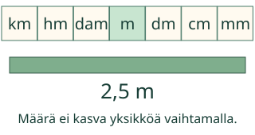
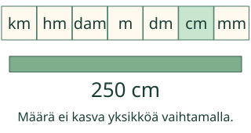
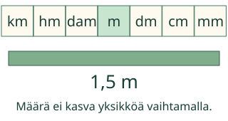
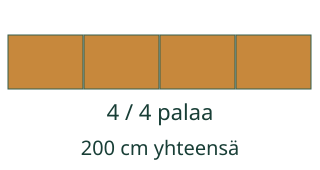

<link rel="stylesheet" href="lesson.css"><section data-b13-unit>
<section data-teaching-step="1" data-lesson-role="teaching-step">
<div class="intro"><p>Aava tarvitsee nauhan senttimetreinä. Muunna sama pituus.</p></div>
</section>

<section data-teaching-step="2" data-lesson-role="teaching-step">
<section data-explore><button disabled type="button" data-action="step">Näytä seuraava vaihe</button><div data-model></div><p data-caption>2,5 m = 2,5 m. Sama pituus säilyy.</p><details data-tools data-lesson-role="teaching-step"><summary>Vaihda mallia tai toista</summary><label>Malli<select disabled data-model-case><option value="forward">2,5 m → cm</option><option value="back">150 cm → m</option><option value="far">1,2 km → m</option><option value="groups">2 m → cm ja annoksiin</option></select></label><button disabled type="button" data-action="play">Toista vaiheet</button> <button disabled type="button" data-action="stop">Pysäytä</button> <button disabled type="button" data-action="model-reset">Mallin alkuun</button><p>Yksi vaihe nimeää saman määrän uudelleen tai siirtää yhden annoksen. Voit vastata suoraan ilman mallin läpikäyntiä.</p></details></section>
</section>
<nav data-lesson-role="metadata"><a href="#explain">Näin muunnat</a> · <a href="#practice">Kokeile itse</a> · <a href="#teacher">Paperille</a></nav>
<section id="explain" data-lesson-role="worked-example"><section data-teaching-step="3-1" data-lesson-role="worked-example"><h2>Näin muunnat</h2><h2>Pieni yksikkö, suurempi lukuarvo</h2><p>2,5 m nauhaa on 250 cm. Metristä desimetriin kerrotaan 10:llä ja desimetristä senttimetriin uudelleen 10:llä. 2,5 × 100 = 250. Nauha ei pitene. Desimaaliluku 2,5 tarkoittaa kahta ja puolta.</p><figure data-lesson-role="worked-example"><figcaption>Ratkaistu esimerkki. Yksiköt näkyvät aina lukuarvon mukana.</figcaption></figure></section>
<section data-teaching-step="3-2" data-lesson-role="worked-example"><h3>Toiseen suuntaan</h3><p>150 cm = 1,5 m. Sata senttimetriä muodostaa metrin, 50 cm vielä puoli metriä. Jaa 100:lla. 150 ei ole tässä pidempi kuin 1,5: yksiköt ovat eri.</p><figure data-lesson-role="worked-example"><figcaption>Suurempia mittayksiköitä tarvitaan vähemmän.</figcaption></figure></section>
<section data-teaching-step="3-3" data-lesson-role="worked-example"><h3>Yhden välin ansa</h3><p>km → m on kolme kymmenaskelta, ei yksi: km → hm → dam → m. 1,2 km = 1 200 m. Harvinaisia väliyksikköjä ei tarvitse opetella ulkoa, mutta niiden kertoimia ei saa ohittaa.</p><p>Ennusta ennen seuraavaa vaihetta: kasvaako vai pieneneekö lukuarvo? Mikä määrä pysyy samana?</p></section>
<section data-teaching-step="3-4" data-lesson-role="worked-example"><h3>Monta palaa lankusta?</h3><p>3 m = 300 cm. Kun yksi pala on 25 cm, 300 : 25 = 12 palaa. Muunna ennen jakamista. Tässä ei ole sahanterän hävikkiä. Mallissa voit kokeilla helpompaa 2 m:n lankkua ja 50 cm:n paloja.</p><figure data-lesson-role="worked-example"><figcaption>Muunna samaan yksikköön ennen annosten laskemista.</figcaption></figure></section></section>

<section data-teaching-step="4" data-lesson-role="teaching-step">
<details data-lesson-role="teaching-step"><summary>Kokeile omaa muunnosta</summary><p>Kirjoita määrä ja valitse saman suureen yksiköt. Tämä näyttää laskun arvon, ei anna osaamisarviota.</p><label>Määrä<input disabled type="text" inputmode="text" data-value value="1" maxlength="128"></label><label>Mistä yksiköstä<select disabled data-from><option value="km">km</option><option value="hm">hm</option><option value="dam">dam</option><option value="m">m</option><option value="dm">dm</option><option value="cm">cm</option><option value="mm">mm</option></select></label><label>Mihin yksikköön<select disabled data-to><option value="km">km</option><option value="hm">hm</option><option value="dam">dam</option><option value="m">m</option><option value="dm">dm</option><option value="cm">cm</option><option value="mm">mm</option></select></label><button disabled type="button" data-action="convert">Näytä sama määrä</button><p data-converted>Valitse määrä ja yksiköt.</p></details><h2 id="practice">Kokeile itse</h2><p>Yksikkö on tehtävässä. Kirjoita kenttään vain lukuarvo. Myös samanarvoinen murtoluku käy.</p><label>Tehtävä<select disabled data-task><option value="forward">2,5 m = □ cm</option><option value="small">37 cm = □ mm</option><option value="far">1,2 km = □ m</option><option value="back">150 cm = □ m</option><option value="tiny">25 mm = □ cm</option><option value="transfer">3 m lankkua sahataan 25 cm:n paloiksi</option><option value="zero">0 m = □ mm</option><option value="match">Täydennä samat pituudet: 1 m = □ cm; 1 km = □ m; 150</option><option value="sense">Mittauksessa pöydän pituudeksi saatiin 120 cm</option></select></label><p data-question>2,5 m = □ cm. Sama nauha, eri yksikkö.</p><div data-single><label>Lukuarvo<input disabled data-answer type="text" inputmode="text" maxlength="128" placeholder="esim. 1,5 tai 3/2"></label></div><div data-many hidden><label>1. lukuarvo<input disabled data-answer type="text" inputmode="text" maxlength="128"></label><label>2. lukuarvo<input disabled data-answer type="text" inputmode="text" maxlength="128"></label><label>3. lukuarvo<input disabled data-answer type="text" inputmode="text" maxlength="128"></label></div><div data-choicebox hidden><label>Vertaile<select disabled data-answer><option value="">Valitse</option><option value="sama">Sama määrä</option><option value="eri">Eri määrä</option></select></label></div><button disabled type="button" data-action="check">Tarkista</button><p data-feedback aria-live="polite" data-result="neutral">Tarkista, kun olet valmis.</p><details data-lesson-role="hint"><summary>Tarvitsen vihjeen</summary><p>Kirjoita ensin, montako pienempää yksikköä on yhdessä suuremmassa. Pienempään muunnettaessa kerro, suurempaan muunnettaessa jaa. Tarkista yksiköt uudelleen. Käytä annostehtävässä samaa yksikköä sekä kokonaismäärälle että yhdelle annokselle.</p></details>
</section>
<details id="teacher" data-lesson-role="teacher-note"><summary>Opettajalle, paperille ja lopuksi</summary><p>Mittaa paperisuikale viivaimella nollasta. Kirjaa sama pituus millimetreinä ja senttimetreinä. Näytön kuva ei ole oikean kokoinen viivain.</p><p>Poistumiskysymys: Muuta 75 cm metreiksi ja selitä, miksi lukuarvo pienenee. Hyväksy 0,75 m sekä 3/4 m.</p><p>Harjoittelu näyttää nykyisen tuetun vastauksen tarkistuksen. Se ei todista itsenäistä mittaamista, viivästettyä muistamista tai muodollista hallintaa. Vihje ja malli ovat vapaaehtoisia. Henkilöhistoriaa ei tallenneta.</p><p>Muunnin tukee vain tässä nimettyjä saman suureen yksiköitä ja ei-negatiivisia määriä 0…1 000 000. Vastauksissa tuetaan tavallisia kokonais- ja desimaalilukuja sekä murtolukuja (enintään 128 merkkiä; normalisoituna 18 kokonais- ja 9 desimaalimerkkiä). Ei eksponentti- tai laskulausekesyntaksia, negatiivisia määriä eikä pyöristämistä. Etu- ja loppunollat eivät muuta arvoa.</p><p>Toiston 650 ms on esitysväli, ei fyysistä aikaa. Pituus, massa ja tilavuus eivät muunnu toisikseen ilman muuta tietoa. Aikamuunnos 1 h = 60 min ei kuulu näihin kymmenkertoimiin.</p></details><noscript data-lesson-role="metadata"><p>Ilman JavaScriptiä alkukuva, esimerkit ja selitykset säilyvät. Muunna ja vastaa paperille. Vuorovaikutus ja tarkistuspalaute tarvitsevat JavaScriptin.</p></noscript></section>
